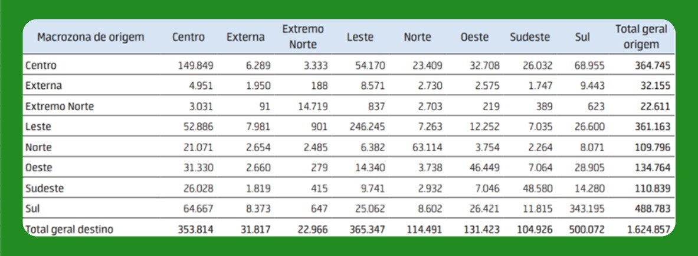

São José dos Campos - SP
São José dos Campos é uma cidade estratégica localizada no Vale do Paraíba, interior do estado de São Paulo. Reconhecida por sua forte indústria e tecnologia, destaca-se como um dos principais polos aeroespaciais e de inovação do Brasil. Além disso, sua localização privilegiada entre as capitais São Paulo e Rio de Janeiro, aliada a um dinamismo econômico diversificado, faz de São José dos Campos um importante centro de desenvolvimento no cenário nacional.
Figura 1 - São José dos Campos - Região Metropolitana do Vale do Paraíba e do Litoral Norte

(Fonte: Adaptado de IBGE)
Destaques da Cidade
- Infraestrutura desenvolvida
- Alto índice de qualidade de vida
- Forte indústria e tecnologia
- Polo aeroespacial e tecnológico
- Instituições de ensino e pesquisa de referência
Divisão Geográfica
A cidade pode ser dividida em sete regiões geográficas principais, ou macrozonas:
- Centro
- Norte
- Sul
- Sudeste
- Leste
- Oeste
- Extremo Norte
Regiões mais populosas: Leste e Sul
Regiões com maior densidade populacional: Centro e Sul
Figura 2 - Número de habitantes e densidade populacional

(Fonte: Adaptado de FGV Atlas OD)
Dados Populacionais e Econômicos
- População Censo IBGE 2022: 697.054 habitantes
- População estimada em 2024: 724.756 habitantes
- Densidade demográfica: 634,03 hab/km²
- Índice de Desenvolvimento Humano Municipal (IDHM): 0,807
- PIB per capita: +61 mil reais
- Salário médio mensal: 3,3 salários mínimos
- Área total do município: 1.099,409 km²
- Área urbanizada: 128,94 km²
Figura 3 - Dados sobre população, trabalho, economia, meio ambiente e território

(Fonte: Adaptado de IBGE)
Renda Per Capita Mensal por Macrozona
- Regiões com maior renda per capita mensal: Oeste, Centro e Sul
Figura 4 - Renda per capita mensal média

(Fonte: Adaptado de IBGE)
Panorama Geral dos Dados
Figura 5 - Panorama Geral dos Dados Demográficos e Socioeconômicos

(Fonte: Autor)
Transporte e Fluxo
Figura 6 - Hierarquia viária de São José dos Campos

(Fonte: Adaptado de FGV Atlas OD)
Principais Regiões de Origem das Viagens:
- Sul
- Centro
- Leste
Principais Regiões de Destino das Viagens:
- Sul
- Leste
- Centro
Figura 7 - Viagens entre as macrozonas

(Fonte: Adaptado de FGV Atlas OD)
Regiões com Maior Mobilidade:
- Oeste
- Centro
- Leste
Figura 8 - Índice de mobilidade por região

(Fonte: Adaptado de FGV Atlas OD)
Principais Meios de Transporte:
- Automóvel (individual)
- Transporte de passageiros (coletivo e individual)
Figura 9 - Porcentagem de meios de transporte e seus usos
(Fonte: Adaptado de FGV Atlas OD)
Regulamentos e Normas
ICAO - Organização da Aviação Civil Internacional:
- Anexo 14: Este anexo da ICAO fornece padrões e práticas recomendadas para aeródromos, incluindo helipontos. Ele cobre aspectos como projeto, construção, operação e manutenção de helipontos
- Doc 9261 (Manual de Heliportos): Documento da ICAO com orientações detalhadas sobre o projeto, construção e operação de helipontos, incluindo considerações sobre segurança, sinalização e iluminação
- Lei nº 7.565, de 19 de dezembro de 1986: Código Brasileiro de Aeronáutica
ANAC - Agência Nacional de Aviação Civil
- RBAC 155 (Regulamento Brasileiro da Aviação Civil nº 155): Estabelece os requisitos para a construção, operação e manutenção de helipontos, cobrindo aspectos como localização, dimensionamento, sinalização, iluminação e segurança
- Manual de Orientações de Infraestrutura de Helipontos: Documento de referência para projetos de helipontos, auxiliando no entendimento dos elementos previstos no RBAC nº 155
- RBAC-E nº 94/2017: Este Regulamento Brasileiro da Aviação Civil Especial – RBAC-E aborda os requisitos gerais de competência da ANAC para aeronaves não tripuladas
DECEA - Departamento de Controle do Espaço Aéreo
- ICA 11-408 (Instrução do Comando da Aeronáutica nº 11-408): Restrições aos objetos projetados no espaço aéreo que possam afetar adversamente a segurança ou a regularidade das operações aéreas
Prefeitura de São José dos Campos
- Decreto nº 19.665, de 14 de junho de 2024: Regulamenta a Lei Complementar nº 633, de 3 de abril de 2020, que "dispõe sobre exigências e normas relativas ao licenciamento, aprovação e instalação de empreendimentos classificados ou não como Polo Gerador de Tráfego - PGT", e disciplina as vagas de estacionamento, os acessos, vias de circulação interna, a área de manobra e a acumulação de veículos e dá outras providências
- Lei Complementar nº 623, de 9 de outubro de 2019: Estabelece as normas relativas ao parcelamento, uso e ocupação do solo, em consonância com o Plano Diretor de Desenvolvimento Integrado do Município de São José dos Campos aprovado e instituído pela Lei Complementar nº 612, de 30 de novembro de 2018
- Plano Municipal de Mobilidade Urbana – Lei Complementar nº 576/2016: Institui a política municipal de mobilidade urbana no município de São José dos Campos e dá outras providências
- Lei de Uso e Ocupação do Solo – Lei Complementar nº 623/2019: Estabelece as normas relativas ao parcelamento, uso e ocupação do solo, em consonância com o Plano Diretor de Desenvolvimento Integrado do Município de São José dos Campos aprovado e instituído pela Lei Complementar nº 612/2018
Zoneamento Urbano e Uso de Solo
Divisões de Zoneamento Urbano e Uso de Solo:
- Centralidade
- Corredores
- Zonas residenciais
- Zonas de uso diversificado
- Zonas industriais
- Zonas especiais
- Zona aeroportuária
- Zoas de São Francisco Xavier
Figura 10 - Mapa de uso e ocupação do solo de São José dos Campos

(Fonte: Adaptado de IBGE e Prefeitura de São José dos Campos)